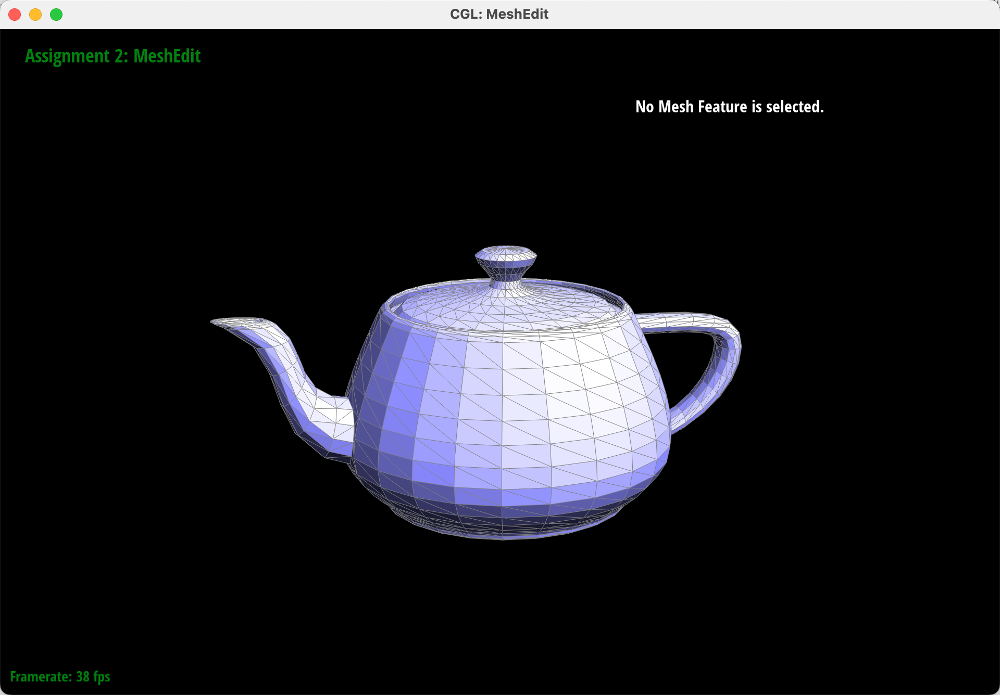

Overview
I have implemented the method to evaluate Bezier curves and Bezier surfaces using de Casteljau's algorithm, the method to calculate the normal of a vertex weighed by area of the triangles around it(to make the texture look smoother), the method to flip and split an edge, and they work together recursively to implement the method of upsampling, which makes the surface finer and smoother.
I have built a function to turn the stored coordinates set into a model whose surface is made up of triangle meshes, and some functions to modify it and improve its quality.
I have got deeper understanding of how de Casteljau’s algorithm works to evaluate Bezier curves and what Bezier curves work for. I learned the usage of normals in shading. I have got stronger feeling of the convenience of the halfedge structure, but I also need to be really careful while dealing with the pointers. Reading the spec and understand the design of the steps and some specific data is also very interesting. I have a vivid sense of accomplishment after a long time of debugging and the upsample method finally worked.
Section I: Bezier Curves and Surfaces
Part 1: Bezier Curves with 1D de Casteljau Subdivision
Briefly explain de Casteljau's algorithm and how you implemented it in order to evaluate Bezier curves.Doing linear interpolation on each edge recursively. After connecting the dividing points, the corner was cut and the number of edges reduces for 1. When the number of edges reduces to 2, a final point x(t) is determined and the Bezier curve can be evaluated.
Take a look at the provided .bzc files and create your own Bezier curve with 6 control points of your choosing. Use this Bezier curve for your screenshots below.
My own Bezier curve with 6 control points of my choosing, adding a new point and modifying some data from curve2.bzc which contains 5 control points.
Show screenshots of each step / level of the evaluation from the original control points down to the final evaluated point. Press E to step through. Toggle C to show the completed Bezier curve as well.
|
|
|
|
|
|
|
|
|
Show a screenshot of a slightly different Bezier curve by moving the original control points around and modifying the parameter \(t\) via mouse scrolling.
Part 2: Bezier Surfaces with Separable 1D de Casteljau
Briefly explain how de Casteljau algorithm extends to Bezier surfaces and how you implemented it in order to evaluate Bezier surfaces.Two parameters(u and v) separately apply to the n*n matrix of control points. Use de Casteljau to evaluate point u on each of the n Bezier curves in u. This gives n control points for the "moving" Bezier curve. Then use 1D de Casteljau to evaluate point v on the "moving" curve to get the point v.
1.I implemented evaluateStep, which is a basic operation to do linear interpolation for once and reduce the number of points by 1.
2.I implemented evaluate1D, which does linear interpolation recursively until there is only 1 point.
3.I implemented evaluate, which first does linear interpolation by parameter u to every row of controlPoints, turning it into a 1D vector containing n points. Then it does linear interpolation by parameter v to this vector and get the final point.
Show a screenshot of bez/teapot.bez (not .dae) evaluated by your implementation.
Section II: Triangle Meshes and Half-Edge Data Structure
Part 3: Area-Weighted Vertex Normals
Briefly explain how you implemented the area-weighted vertex normals.I designed a loop to traverse the vertices connecting to the target vertex, getting two adjacent vertices at each time. The two vertices along with the target vertex form a triangle. Calculate the area and normal of the triangles and add up the area-weighted result to get the area-weighted vertex normals. In addition, I faced the common mistake and solved it by multiplying -1 to get the final result.
Show screenshots of dae/teapot.dae (not .bez) comparing teapot shading with and without vertex normals. Use Q to toggle default flat shading and Phong shading.
|

|
|
Part 4: Edge Flip
Briefly explain how you implemented the edge flip operation and describe any interesting implementation / debugging tricks you have used.I follow the recommendation in the spec to draw a mesh, write down all elements and find out all the modified elements. There is no need to change the four edges of the outer quad, but the shared edge should be reassigned. I set the pointers carefully according to the picture I draw.

Show screenshots of the teapot before and after some edge flips.
|
|
|
Write about your eventful debugging journey, if you have experienced one.
Bug: The flip function works alright at the first click, but when I click the already flipped edge again, a hole appears.
Solution: At first, I thought listing out all the elements was too inconvenient, so I just defined HalfedgeIters and VertexIters, and set their pointers. While setting the pointers of halfedge to face, etc, I used explanations like h->face(). The wrong effect showed that this wouldn’t work, so I defined EdgeIters and FaceIters, and used these expressions instead of getting members of h. And the bug is solved.
Part 5: Edge Split
Briefly explain how you implemented the edge split operation and describe any interesting implementation / debugging tricks you have used.I follow the recommendation in the spec to draw a mesh, write down all elements and find out all the modified elements. I get all the existing elements and declared all the necessary new elements. I have 6 new halfedges, 3 new edges and 2 new faces to edit, and also some existing elements. I then set each pointer carefully according to the picture I drew and tested the result.
Show screenshots of a mesh before and after some edge splits.
|
|
|
Show screenshots of a mesh before and after a combination of both edge splits and edge flips.
|
|
|
Write about your eventful debugging journey, if you have experienced one.
I didn't meet any bug because I learned from the failure in part 4 and get all the elements involved in the code from the beginning and write carefully about the correspondence of pointers.
Part 6: Loop Subdivision for Mesh Upsampling
Briefly explain how you implemented the loop subdivision and describe any interesting implementation / debugging tricks you have used.I implemented the loop subdivision according to the spec and the instrustion given in student_code.cpp.
1.Compute the proper position for old vertices using the Loop subdivision rule, and store them.
2.Compute the midpoint of every edge using the given method and store them.
3.Split every edge, mark the edges not to be split again and will or will not be flipped in the next step.
4.Flip the proper edges(any new edge that connects an old and new vertex)
5.Update the proper position for every vertex.
Take some notes, as well as some screenshots, of your observations on how meshes behave after loop subdivision. What happens to sharp corners and edges? Can you reduce this effect by pre-splitting some edges?
|
|
|
|
|
|
The meshes become dense at sharp corners, and sharp edges seem to be smooth, which causes distortion of the original graphic.
|
|
|
|
|
|
Doing some pre-splitting on the sharp edges can reduce this effect.
Load dae/cube.dae. Perform several iterations of loop subdivision on the cube. Notice that the cube becomes slightly asymmetric after repeated subdivisions. Can you pre-process the cube with edge flips and splits so that the cube subdivides symmetrically? Document these effects and explain why they occur. Also explain how your pre-processing helps alleviate the effects.
Effect: Some of the original corners of the cube bulge and some become smooth, and the cube becomes asymmetric.
Why they occur: Each face of the cube is consist of two triangles, which means the cube is not in central symmetry. The subdivision method can’t perform unevenly due to that.
Pre-processing method: Split the edge on each surface for once, turn it into a face consist of four triangles lie in central symmetry. Then performing the subdivision method will not cause asymmetry any more.
|
|
|